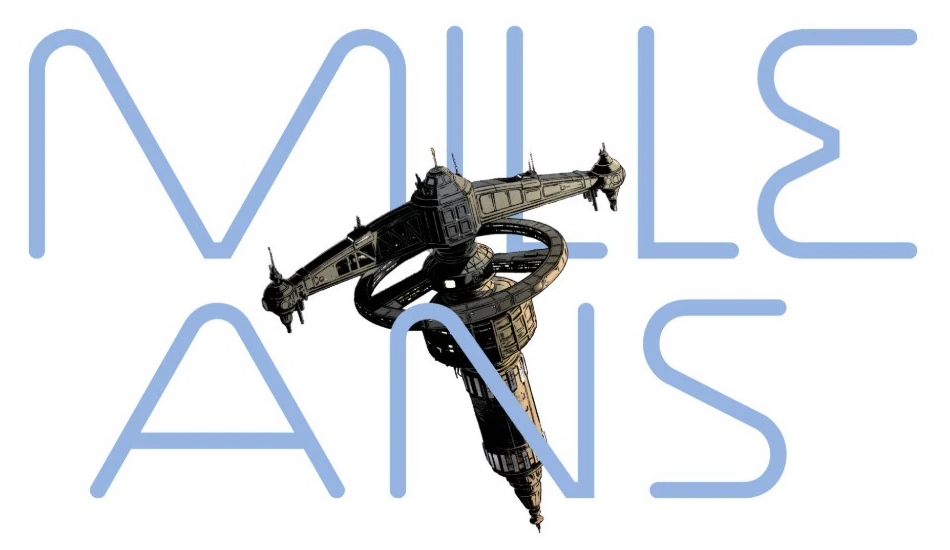
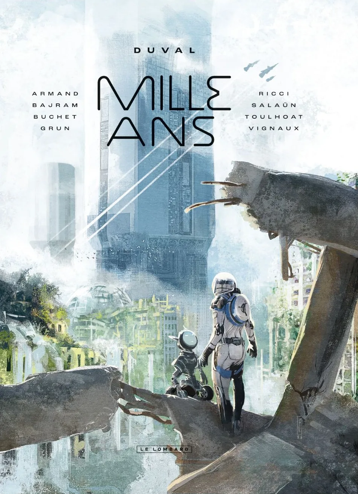
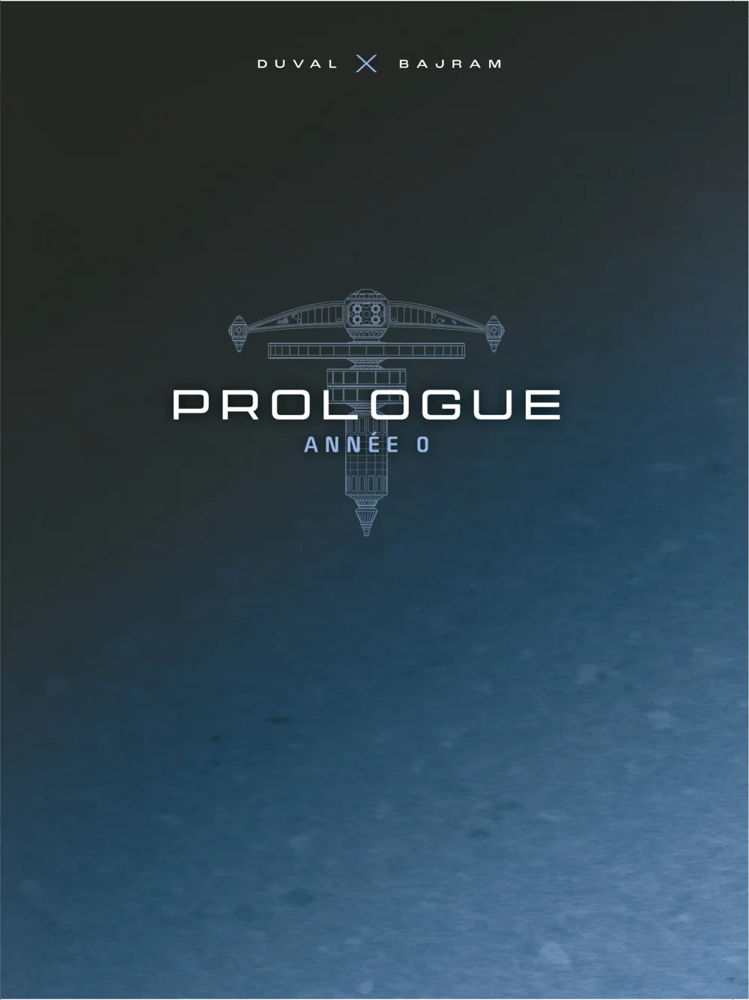
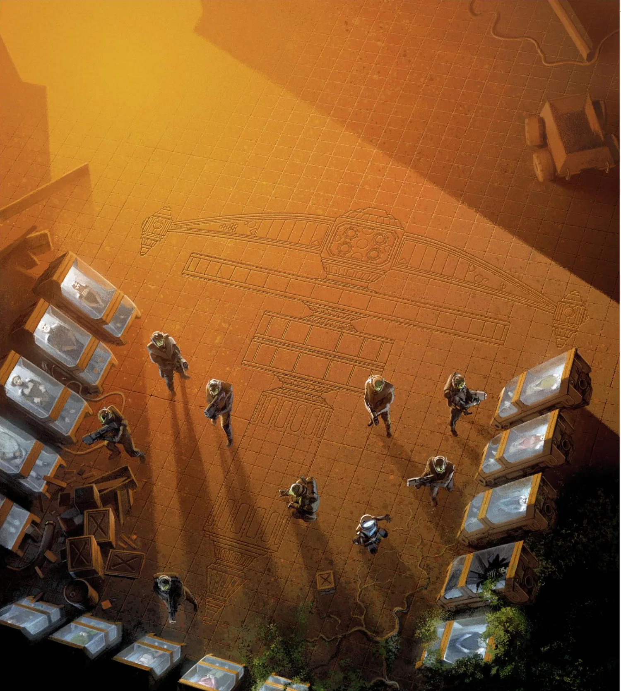
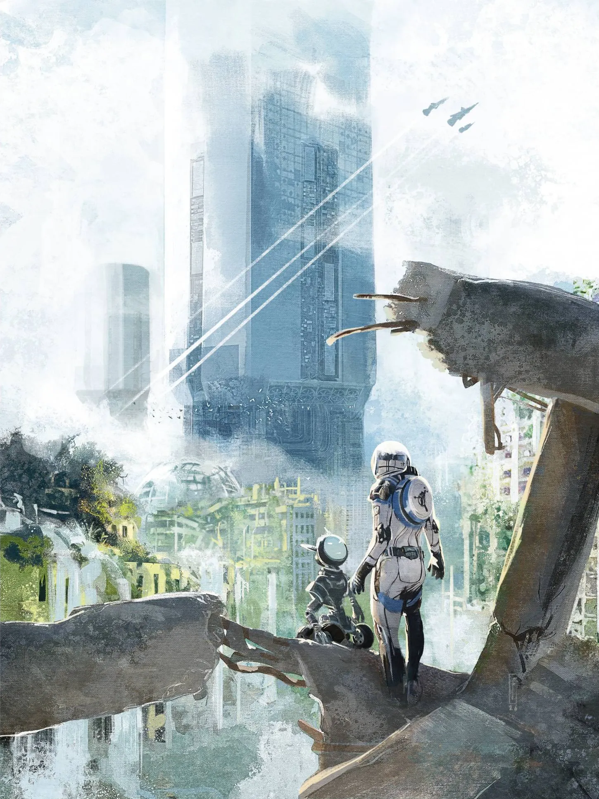

2056
La catastrophe
Conflits, surpopulation, épuisement des ressources naturelles : une catastrophe écologique majeure. Pour sauver la planète, une seule solution.

Le Lombard présente
Un scénariste. Huit dessinateurs. Mille ans.
DuvalArmand · Bajram · Buchet · Grun · Ricci · Salaün · Toulhoat · Vignaux
Parution en librairie · 23 octobre 2026
L'album est disponible en librairie.
01 · Transmission d'ouverture

2056. Les conflits, la surpopulation et l'épuisement des ressources naturelles ont débouché sur une catastrophe écologique majeure.
Pour sauver la planète, une seule solution : laisser la Terre se régénérer… pendant mille ans !
Une poignée d'humains privilégiés a été cryogénisée et va se retrouver malgré elle à devoir assurer la survie de notre espèce…
02 · Projet éditorial
Un scénariste et huit dessinateurs s'associent pour créer une grande fresque composée de 8 récits courts.
Les projets collectifs de cette ampleur restent rares en bande dessinée. Ici, un seul scénariste, Fred Duval, écrit la fresque ; huit dessinateurs se partagent les chapitres, chacun avec son regard et son style, pour construire ensemble un seul grand récit.
« Huit histoires pour une grande fresque par les plus grands noms de la SF »
03 · Journal de bord
Les premières transmissions de l'album sont déchiffrées ; les suivantes le seront bientôt.
2056
Conflits, surpopulation, épuisement des ressources naturelles : une catastrophe écologique majeure. Pour sauver la planète, une seule solution.

Année 0
Duval × Bajram
Année +0005
Duval × Buchet
Année +????
Transmission en cours de décryptage.
Année +????
Transmission en cours de décryptage.
Année +????
Transmission en cours de décryptage.

Une poignée d'humains privilégiés a été cryogénisée…

… pour laisser la Terre se régénérer… pendant mille ans !
04 · Recherches graphiques
Station, caissons, navette, scaphandres, robots et unités autonomes : les recherches graphiques qui ont servi à inventer le monde de Mille Ans.
Recherches graphiques © Le Lombard
05 · Équipage
Du thriller à la fantasy, de la hard SF à la fresque historique : un équipage aux parcours très différents, réuni pour un même voyage.
06 · Prêt pour le décollage
Feuilletez les premières planches de l'album, puis retrouvez-le en librairie le 23 octobre 2026.